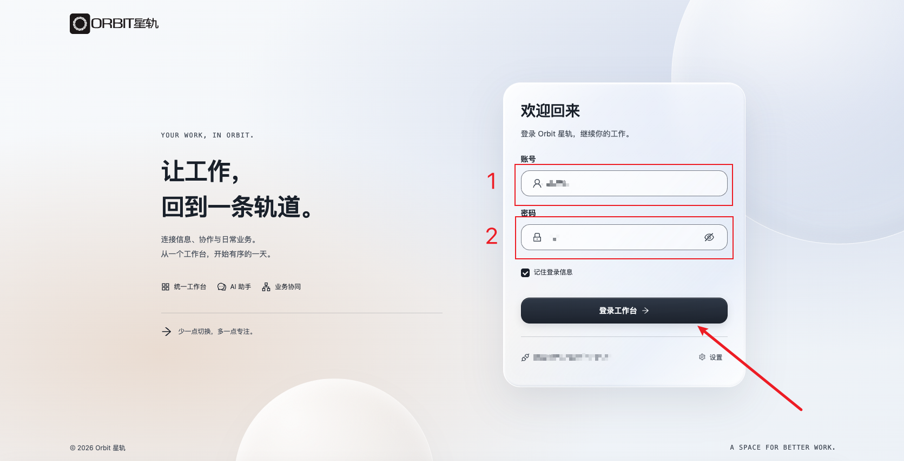
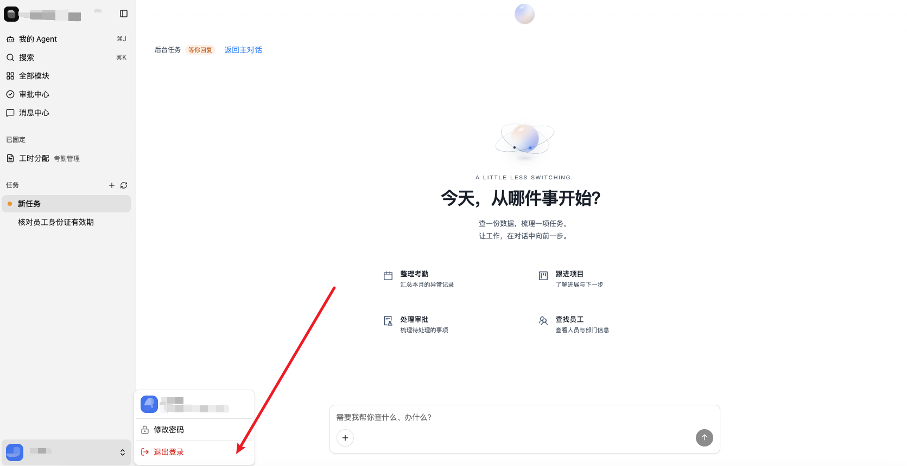
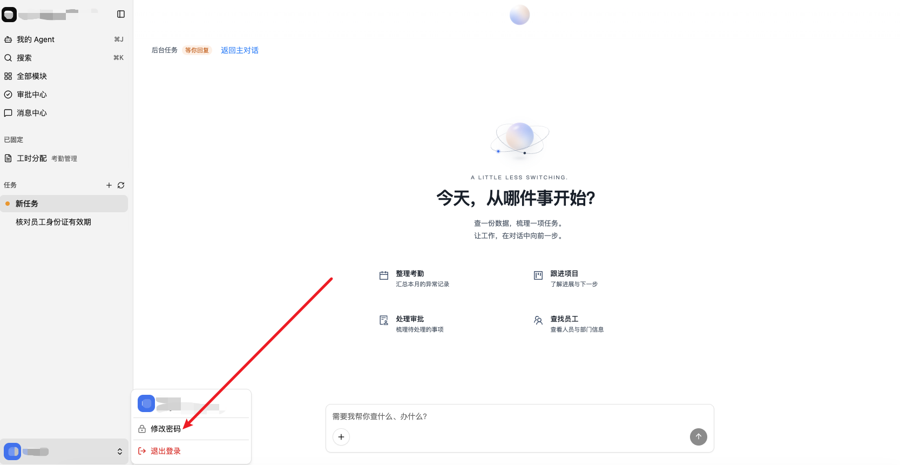
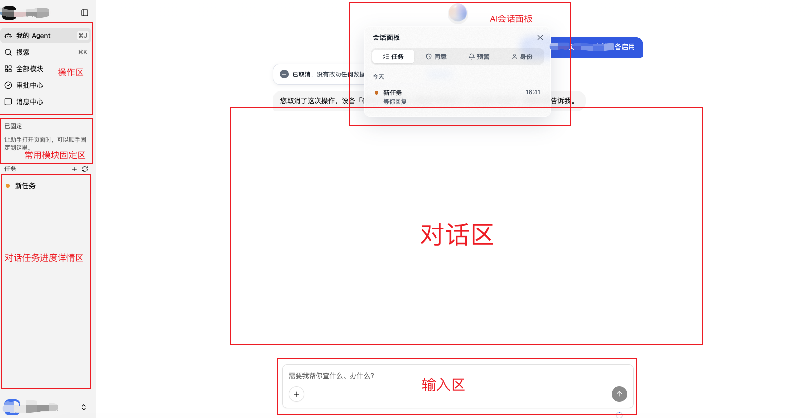
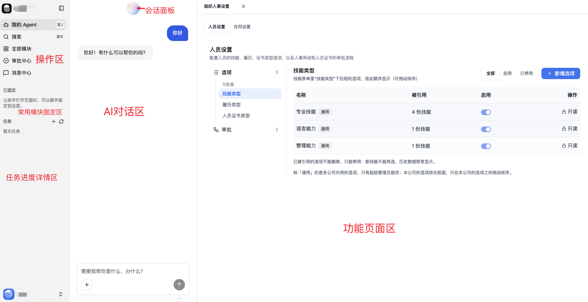

第1章 手册概述
1.1 手册目的与适用对象
本文档为 ORBIT 星轨普通业务用户操作手册，面向业务操作人员、部门主管、审批人员。
- 本手册侧重业务使用操作；系统后台配置、权限、流程设置请查阅《系统管理员手册》。
1.2 产品简介
ORBIT 星轨是原生AI企业管理软件，覆盖采购、项目、车辆、人事、考勤、库存、薪酬等业务，内置星灵助手AI对话入口，支持自然语言完成查询、统计、基础档案修改，简化传统ERP复杂菜单操作。
1.3 术语说明
- 星灵助手：系统全局AI交互入口，底部输入框发起指令。
- 快捷指令：首页预设高频任务，一键执行业务。
- AI任务编号：AI每一次操作生成唯一编号，用于追溯执行结果。
- 主数据：供应商、员工、物料、仓库等基础档案信息。
1.4 安全注意事项
- 禁止共享账号密码，每个人使用自己独立账号登录。
- 星灵助手同样受系统权限控制，没有权限的操作会直接拒绝。
- AI返回的数据建议人工核对，重要业务以原始单据为准。
- 系统全部操作留痕，请勿执行越权业务操作。
- 体验申请所提交的联系方式仅用于业务沟通，系统将在 90 天内自动彻底清除记录，不对外公开。
第2章 系统入门
系统访问方式
- 使用Chrome、Edge现代浏览器访问系统登录地址，不建议使用老旧浏览器；
- 登录页面需要从官网进入，官网地址：http://xxx.com；
用户登录

退出登录

修改密码

星灵助手（AI入口）使用入门
-
没有窗口打开时：
- 主页面AI对话区，下方为输入区；
- 点击主页顶部的星灵球，即可弹出会话面板；
- 最左侧分三个区域，顶部为操作区，中部为常用模块固定区，底部为AI对话任务进度详情区；
- AI权限与用户权限保持一致，用户无法访问的权限，AI同样无法访问。

-
有窗口打开时：
- 主页面分为两部分：左边为AI对话区；右边为功能页面区；
- 功能页面区顶部设有页面标签，支持同时打开多个页面；
- 其余地方与上述情况保持一致。

第3章 各业务模块操作指引
每个模块通用逻辑：查看列表、查看详情、新建单据、查询筛选；也可以直接使用星灵助手通过自然语言完成查询。
3.1 首页工作台总览
集中聚合待办事项、业务概览以及风险预警信息，关键业务事项与潜在经营风险集中可视化呈现，帮助管理人员快速掌握企业整体运营概况。
3.2 供应商管理
- 工作台：供应商全链路业务的统一汇总操作入口；
- 供应商列表：负责维护供应商基础档案信息，支持基于供应商档案直接发起询价邀约；
- 询价单：实现采购询价单据的创建与全周期跟踪。采购人员可新建询价单，录入采购需求并邀约合格供应商参与报价；系统完整记录询价单从草稿、已下发到定标的全状态流转，支持实时查看报价进度、查阅报价明细、多供应商横向比价，并完成最终定标工作。
3.3 项目管理
实现项目全生命周期管控，完整覆盖立项、执行、验收、结算全业务环节。支持项目创建与基础档案维护、项目进度跟踪、业务状态流转管控；可与采购、合同、供应商等模块深度联动，做到项目全业务链路可查询、可追溯。
3.4 车辆管理
- 车辆管理：车辆档案的新增、删除、编辑与查询，支持查看车辆详情。管理员可维护车牌号、车辆类型、品牌型号、归属部门、使用状态等档案信息；系统按状态汇总车辆总数、待启用、在用、行程中、维修中、停用、已报废等统计指标，支持按状态筛选与详情查看，车辆数据与用车申请、派车管理、驾驶员模块联动，作为车辆调度与运营管理的基础数据源；
- 车辆概览：车辆整体运营数据汇总看板。管理人员可查看车辆总数、今日用车数、证照预警数（已过期、即将到期）、保养提醒数（超期、临近）等关键统计指标；支持快捷操作入口，可直接新建派车、发起派车变更、登记加油、创建维修工单；看板同时展示风险待办表、今日派车动态与车辆状态列表，帮助管理人员快速掌握车辆运营概况、及时处理证照与保养风险，为车辆调度与管理决策提供数据支撑。
- 用车申请：用车需求的线上提交与跟踪。用车人员可新建用车申请，填写用车时间、事由、目的地、乘车人数、随行人员等信息；系统记录申请从提交、审批到派车的状态流转，支持实时查看审批进度与派车结果，申请数据与派车管理、车辆档案联动；
- 派车管理：规范化用车调度与派车审批流程。用车人员提交用车申请，填写用车时间、事由、目的地等信息；系统覆盖申请、审批、派车、还车完整业务流程，调度人员可完成车辆与司机分配，登记出车、还车相关信息，全流程操作留痕，支持数据查询与统计分析。
- 驾驶员：驾驶员档案与资质管理。管理员可对驾驶员进行新增、编辑、查看、停用，维护姓名、工号、所属部门、驾驶证号、准驾车型、有效期、联系方式等信息；系统支持驾驶证到期提醒，驾驶员数据与派车管理联动，作为车辆调度与安全管理的基础档案；
3.5 组织人事
- 部门管理：用于企业组织架构搭建维护。管理员可完成部门的新增、编辑、查看、删除操作，维护部门名称、上级隶属、部门负责人、人员编制等信息；支持多层级组织架构可视化展示，部门档案与人员、角色、权限模块互联互通，为整个系统提供组织基础数据;
- 岗位管理：搭建标准化岗位体系。管理员可实现岗位的新增、编辑、查看、删除，维护岗位名称、归属部门、职级、岗位职责等内容；岗位数据与部门、员工、角色权限联动，输出系统岗位基础主数据；
- 员工管理：维护员工全量基础档案。管理员对员工信息进行新增、编辑、查看、删除，记录姓名、工号、所属部门、岗位、联系方式、入职时间等信息；员工档案关联部门、岗位、角色权限，作为系统人员核心基础数据源；
- 合同管理：聚焦劳动合同全生命周期管理。管理员可完成劳动合同的新建、修改、查阅、续签、终止操作，维护合同编号、员工信息、合同类型、起止时间、薪资条款、签订状态等；设置合同到期自动提醒，合同档案联动员工、部门、岗位模块。
3.6 设备管理
负责设备台账建立与设备全生命周期业务管理。管理员搭建完整设备台账，登记设备名称、编号、型号、归属部门、存放位置、使用状态等档案；支持设备领用、归还、维修保养、报废处置等业务办理；设备数据和部门、员工模块打通，沉淀设备基础主数据。
3.7 考勤管理
- 考勤概览：企业整体考勤数据汇总视图。管理人员可查看员工出勤、迟到、早退、请假、加班、缺勤等统计结果，支持按部门、岗位、时间筛选，输出考勤汇总报表，推送异常考勤提醒，为考勤管理与薪资核算提供数据依据；
- 考勤补差：考勤数据的补录与修正。管理员可对缺卡、漏打卡、考勤机数据异常等情况进行补差登记，维护补差人员、补差日期、补差类型、补差原因及佐证材料；补差记录经审批后同步至打卡记录与考勤统计，确保考勤数据完整准确；
- 打卡记录：员工日常打卡数据的查询与追溯。管理员可按部门、员工、日期查询上下班打卡时间、打卡地点、打卡方式及打卡状态；系统标记缺卡、迟到、早退等异常记录，打卡数据作为考勤统计、异常处理与薪资核算的原始依据；
- 工时分配：工时数据的归集与分摊。管理员可按员工、项目、部门、时间段归集实际工时，将工时分配至对应项目或成本中心，维护工时类型、分配比例与审批状态；工时数据与项目管理、薪酬核算联动，为项目成本核算与劳务结算提供依据；
- 考勤组管理：考勤规则的分组配置。管理员可新增、编辑、查看、停用考勤组，维护考勤组名称、适用部门/人员、打卡方式、上下班时间、休息日规则、迟到早退判定标准等；考勤组与员工档案、部门模块联动，实现不同人群差异化考勤规则管理；
- 假期额度：假期规则与额度标准配置。管理员可维护年假、事假、病假、调休等假期类型，设置额度计算规则、发放周期、有效期、最小请假单位及适用人员范围；假期额度规则与额度台账、假勤申请联动，作为员工假期管理的制度基础；
- 额度台账：员工假期额度的明细台账管理。管理员可按员工、假期类型查询额度发放、使用、剩余、过期等明细记录，支持额度调整与批量导入；台账数据与假期额度、我的额度、假勤申请联动，确保假期余额准确可追溯；
- 考勤统计：批量处理考勤数据统计工作。管理员可按照部门、岗位、时间段多维度统计各类考勤结果，生成汇总报表与明细报表并支持导出，服务人事管理与薪资核算；
- 考勤异常处理：处理各类考勤异常事项。管理员统一查看缺卡、迟到早退、旷工等异常记录；员工可线上提交补卡、考勤申诉；系统支持异常审批、结果归档、状态跟踪，处理结果自动同步考勤统计、薪资核算模块。
3.8 假勤
- 我的考勤：员工个人考勤自助查询。员工可查看本人每日打卡记录、出勤天数、迟到早退、缺卡、加班及异常处理进度，支持按月查询与明细导出；数据与打卡记录、考勤异常处理联动，方便员工及时核对与申诉；
- 我的额度：员工个人假期额度查询。员工可查看年假、事假、病假、调休等各类假期的总额度、已使用、剩余及有效期信息，支持按假期类型查看使用明细；额度数据与额度台账、假期额度联动，作为员工请假申请的额度依据；
- 我的申请：员工个人假勤申请的提交与跟踪。员工可新建请假、加班、补卡、出差等申请，填写申请类型、起止时间、事由及附件；系统记录申请从提交、审批到归档的状态流转，支持实时查看审批进度与审批意见，申请结果同步至我的考勤与考勤统计；
3.9 库存管理
- 库存概览：库存整体运营情况汇总看板。管理人员查看库存总量、库存金额、品类分布、出入库趋势、库存预警等关键指标，支持仓库、品类、时间条件筛选，输出库存汇总报表，辅助库存管控与采购决策；
- 物料管理：物料基础档案维护。管理员可对物料进行新增、编辑、查看、停用，维护物料编码、名称、规格型号、计量单位、品类、安全库存、参考价格等信息；物料档案与仓库、库存单据、库存余额联动，作为库存业务的基础主数据；
- 仓库管理：仓库管理：仓库档案信息维护。管理员对仓库进行新增、编辑、查阅、停用，维护仓库编码、名称、地址、负责人、存储条件、启用状态；仓库档案对接物料、库存、出入库业务；
- 项目领用：项目物料领用的申请与跟踪。项目人员可新建领用申请，选择项目、物料、数量、领用仓库、领用人及用途；系统记录申请从提交、审批到出库的状态流转，领用数据与库存单据、项目管理和库存余额联动，实现项目物资消耗可追溯；
- 库存单据：出入库类业务单据管理。管理员可新建、编辑、查阅、审核各类库存单据，登记单据编号、业务类型、物料、数量、仓库、经办人、业务时间；覆盖入库、出库、调拨、盘点单据，单据数据作为库存变动的原始凭证；
- 库存余额：实时库存数据展示。管理人员按仓库、物料、品类查询实时库存数量、库存金额、可用库存、锁定库存；支持筛选与导出，联动物料、仓库、库存单据，支撑库存管控与采购分析；
- 库存流水：库存变动明细追溯。管理人员按物料、仓库、单据类型、时间查询每一笔出入库、调拨、盘点记录，展示变动前后库存数量、变动原因、关联单据、经办人，支持报表导出，用于库存核对与审计溯源。
3.10 薪酬管理
- 工资单：薪资发放单据管理。管理员完成工资单的创建、查阅、审核，登记员工信息、薪资周期、基本工资、绩效、补贴、扣款、实发金额；支持工资单生成、审批、发放全流程留痕，数据对接考勤、劳动合同、员工档案，作为薪资发放依据；
- 劳务工时与工作量验收：劳务人员工时与工作量的记录与验收。管理员可按劳务人员、项目、时间段登记实际工时与完成工作量，维护验收标准、验收结果及佐证材料；验收数据经审批后与劳务结算单联动，作为劳务费用结算的计量依据；
- 劳务结算单：劳务费用的结算单据管理。管理员可新建、编辑、查阅、审核劳务结算单，登记劳务人员/供应商、结算周期、工时或工作量、单价、结算金额、扣款及实付金额；结算单与工作量验收、劳务付款台账联动，实现劳务费用结算全流程留痕；
- 劳务付款台账：劳务付款执行情况的明细台账。财务人员可按劳务人员/供应商、项目、时间查询应付款、已付款、未付款及付款状态，维护付款日期、付款方式、付款凭证等信息；台账与劳务结算单、待付款模块联动，为资金安排与付款执行提供依据；
3.11 费用管理
- 报销单：报销单模块用于员工报销单据的创建与跟踪。员工可新建报销单，填写报销人、标题、事由、币种、承担对象；系统支持按流程完成审批，记录审批状态和审批意见；报销数据与员工、部门、工资单等模块联动，为费用核算和财务处理提供依据；
- 票据：票据模块用于报销票据的录入与管理。员工可录入、修改、查看发票等票据信息，维护票据类型、金额、开票日期、发票号码、关联报销单等；系统支持票据查验、真伪校验和状态跟踪，票据数据与报销单、财务核算等模块联动，为费用报销和财务审核提供依据；
- 待付款：待付款模块用于待付款项的管理与跟踪。财务人员可查看、筛选待付款单据，维护付款对象、付款金额、付款事由、到期时间、付款状态等信息；系统支持按供应商、部门、时间等维度查询，付款数据与采购、合同、报销等模块联动，为资金安排和付款执行提供依据。
3.12 系统管理
- 账号管理：系统用户账号的创建与维护。管理员可对账号进行新增、编辑、查看、停用、重置密码，维护登录账号、姓名、所属部门、岗位、联系方式、账号状态等信息；账号与员工档案、角色权限联动，支持批量导入与状态管控，保障系统登录安全；
- 权限管理：用户角色与访问权限配置。管理员完成角色新增、编辑、查阅、删除，配置角色对应权限，绑定用户与角色关系，精准管控用户对模块、菜单、按钮以及业务数据的访问范围；支持按部门、岗位批量分配权限，联动组织人事模块，筑牢系统权限底座；
- 流程管理：审批与业务流程可视化配置。管理员自定义新增、编辑、启用、停用审批流程，设置流程节点、审批人、流转条件；可针对采购、合同、考勤、调薪等不同业务配置专属流程，流程规则赋能各业务模块审批流转。
3.13 模块设置（公共功能）
模块设置是嵌入在供应商管理、车辆管理、组织人事、考勤管理、库存管理、薪酬管理、费用管理等各业务模块中的公共配置能力，用于对模块内各表单/列表的字段进行个性化增删与调整，以满足不同公司的业务差异与管理需求。管理员可在对应模块的设置入口中，针对具体表单或列表新增自定义字段、删除不需要的字段、调整字段的显示与必填等属性；字段配置仅作用于当前企业租户，不影响系统标准字段与其他模块，配置结果实时应用于该模块的表单录入、列表展示与查询筛选，帮助企业在不改变系统标准逻辑的前提下快速适配自身管理习惯。
第4章 审批流程操作
4.1 待办审批查看
工作台集中展示所有待我审批的单据。
4.2 审批操作
- 同意：审批通过，单据向下流转；
- 驳回：退回发起人，填写驳回意见；
- 转办：转交其他人员处理。
4.3 查看历史审批记录
可查询自己发起、自己审批过的全部历史单据，查看完整流转记录。
4.4 AI辅助发起申请
部分业务可以直接使用星灵助手发起申请，系统自动生成待审批任务，仍需要人工完成审批。
第5章 报表与数据导出
5.1 系统预置报表查看
各业务模块内置常用汇总报表，直接筛选条件查看。
5.2 自定义报表
支持自由搭配需要的字段，按需生成业务报表，满足个性化统计需求。
5.3 数据导出
报表、明细列表页面支持导出Excel，用于本地查阅。注意导出数据注意保密，不要随意转发内部业务数据。
第6章 星灵助手常用指令参考
可以直接模仿下面句式输入到底部AI输入框：
查询类示例
修改基础档案类示例
汇总统计类示例
第7章 常见问题与故障排查FAQ
Q1：使用星灵助手提示操作“被拒绝”？
A：代表当前账号没有该操作权限，请联系系统管理员开通对应权限。
Q2：AI返回的数据不对怎么办？
A：以业务原始单据为准，可以重新下发指令，也可以手动进入页面核对明细。
Q3：找不到某个菜单功能？
A：① 使用星灵助手直接完成业务；② 联系管理员确认账号是否分配菜单权限。
Q4：提交申请，审批一直没有往下走？
A：查看待办确认当前审批人；联系管理员检查审批流程配置。
Q5：报表导出失败？
A：检查网络；减少筛选的数据量；如果持续异常，联系内部技术支持。
第8章 附录
附录A 常用页面入口
- 工作台：首页，处理待办与风险
- 星灵助手：对话框支持全局访问
附录B 问题反馈方式
系统BUG、功能问题，请联系内部系统管理员反馈。
附录C 版本更新说明
手册版本 V1.0，随系统迭代更新。
D1 部署环境准备
D1.1 服务器要求
ORBIT 星轨支持在主流 Linux 服务器上部署，推荐配置如下：
- 操作系统：Ubuntu 20.04+ / CentOS 7+
- CPU：4 核及以上
- 内存：8GB 及以上
- 磁盘：100GB 及以上（视业务数据量调整）
D1.2 依赖组件
- Python 运行环境（项目使用 uv 管理依赖）
- 数据库（MySQL 或 PostgreSQL 均可）
- Redis（用于后台任务队列）
- 大模型 API Key（Orbit 的 AI 能力依赖大模型服务）
D2 安装与初始化
D2.1 获取代码
从交付仓库拉取 Orbit 源码。
D2.2 安装依赖
D2.3 初始化数据库
这一步会按迁移脚本建好所有表结构。
D2.4 启动服务
启动后，系统会自动完成：注册应用 → 注册路由 → 加载插件 → 建表。
D3 配置与启动
D3.1 环境变量配置
按项目提供的配置模板，填写数据库连接、Redis 连接、大模型 API Key 等必要信息。
D3.2 大模型配置
在配置里填好大模型 API Key，确保 AI 能正常对话。
D3.3 模块工具注册
系统各模块的数据操作，是以“工具”的形式提供给 AI 调用的。模块通过 manifest 声明自己的工具能力，启动时会自动加载。
D4 常见部署问题
Q1：启动时报数据库连接错误？
A：检查环境变量里的数据库配置，确认数据库已启动、账号密码正确。
Q2：星灵不响应？
A：检查大模型 API Key 是否配置正确，以及网络能否访问大模型服务。
Q3：AI 说查不到数据？
A：确认对应模块的工具已经注册，以及当前账号是否有该模块的查看权限。
Q4：想加一个新模块？
A：在 modules/ 下新建目录，按推荐结构组织代码，写好 manifest.py 声明模型、仓储、工具和路由，启动时会自动加载。
M1 管理视角下的系统定位
一句话定位
突破传统 ERP 的管理瓶颈
作为管理者，您不需要再去学习复杂的系统菜单，也不需要层层向下催要数据。星灵助手（AI）作为统一中枢，直接连通底层业务数据：
- 告别“信息差”：无需等待各部门提交周报，一句话就能拉取全公司、各项目、各部门的真实经营数据。
- 直达“风险点”：合同到期、库存紧缺、账款逾期、考勤异常，AI 会主动将风险暴露在您面前。
- 穿透“数据墙”：从财务流水到供应链生产，跨部门的数据孤岛被打通，一句话即可完成跨模块的综合统计。
M2 如何实时掌控经营状况
从“看报表”到“问数据”
传统管理软件需要您去点击不同模块、筛选时间、导出表格。在 ORBIT 星轨中，查数据变成了“对话”：
- 全局概览：直接问“今天公司的整体营收情况如何？”或“本月各项目的进度和成本情况？”
- 资金与成本：直接问“本月各部门的费用支出占比是多少？”或“有哪些即将到期的应付款？”
- 人效与团队：直接问“本月各部门的考勤异常和加班汇总情况？”
M3 风险预警与决策提效
让管理动作前置
管理者的核心职责不是“救火”，而是“防火”。系统的 AI 和自动化引擎能帮您把风险挡在前面：
- 审批流智能监控：对于卡住不动的流程，AI 会自动识别并触发预警或自动催办，提升组织运转效率。
- 关键节点风控：异常单据、超额支出、即将逾期的证照和合同，系统会实时推送风险待办，让您第一时间干预。
- 数据资产把控：基于私有化部署（或独立隔离实例），企业核心经营数据从始至终由您掌控，符合最高等级的安全合规要求。
技术赋能管理
- 业务流程支持灵活调整，业务变了直接改，无需找 IT 排期，让系统完美贴合您实际的管理模式；
- AI 的每一次取数和操作都受系统权限严格限制，并留下操作痕迹，确保管理动作合规透明。